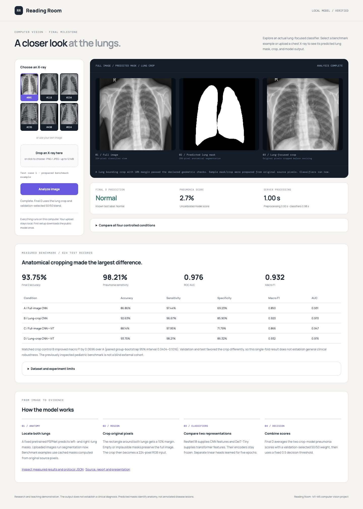

Ready to present.
Start with these three files.
A simple presenter hub for our pediatric chest X-ray project. The slides, script and recorded backup work without a Python setup.
Also available as a PDF below.02 / SPEAKRead-aloud scriptA short script for every slide, exact demo steps and simple answers to likely questions.03 / BACKUPRecorded model demoActual saved model responses. This backup does not perform new inference.
Single-seed, frozen-encoder pilot. The benchmark was inspected previously; validation and test showed different crop trends. The report explains these limits.
Live model setup
- Install Python 3.13, the tested runtime.
- Download and extract the repository ZIP.
- Open Start_Windows.bat or Start_Mac.command. The first setup installs CPU libraries and a verified 326 MiB model.
- Wait for the browser, choose a sample and click Analyze image. Keep the terminal open.
No GPU, API key, SSH access or GitHub login is needed. Linux CPU runtime was tested; Mac and Windows launchers are supplied. Run the first setup before the presentation.

Take everything offline
Download presentation kitSlides PDFFull IEEE-format reportThe kit contains the 8-slide PDF and HTML, presenter script, full research report and self-contained recorded demo. Model weights and historical checkpoints are separate Release downloads.
All model and research downloads →